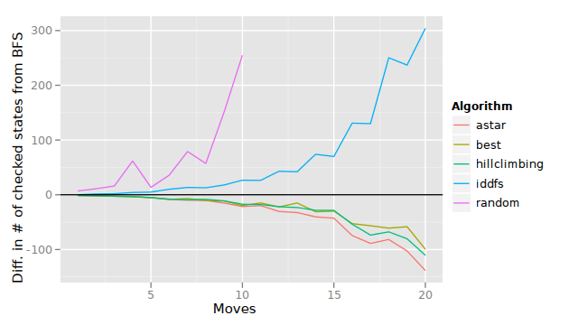
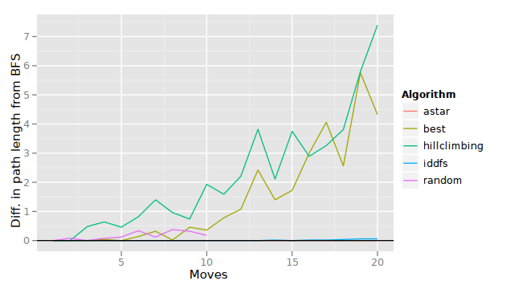
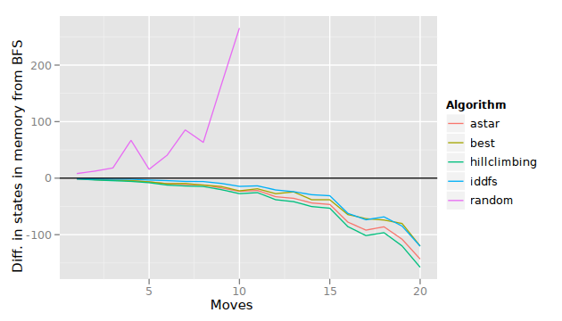

Informed search
Table of Contents
Generic search algorithm
Here is the algorithm again, first seen in the Uninformed search lecture notes.
1. create a list called "tocheck" of states to check
- put the initial state in this list
2. loop:
a. if the "tocheck" list is empty:
- oh no! we have nothing left to check, and we never found a
goal state! we'll have to quit with "no solution"
b. otherwise, pull a state from the "tocheck" list, ensuring that
we have not yet checked this state
i. if this state is a goal state, we're done (return this state)
ii. otherwise,
- find the next states accessible from this state
- put each next state in the "tocheck" list
- repeat the loop
In the uninformed searches, the random search used no particular technique for choosing the next state to check. Breadth-first search (BFS) checked the earliest discovered state, and depth-first search (DFS) checked the most recently discovered state.
BFS is probably the right solution if the goal state is not deep in the search graph. DFS is probably the right solution if the opposite is the case. Naturally, random search is probably never a good idea.
However, many problems do not fit simple descriptions like “the goal state is not deep in the graph.” The goal state may be anywhere, and in different occasions may be deep or shallow in the graph.
Rather than choose how to search based solely on breadth-first or
depth-first, we can often come up with better heuristics. A
heuristic is a “rule of thumb,” or some kind of rule that’s “usually a
good idea.” BFS and DFS have their own heuristics but their heuristics
(how to choose the next states to check) do not change depending on
the problem. Normally, we talk about heuristics in a more
problem-specific sense. A heuristic would be applied in step 2.b.,
in which we choose the next state to check.
Hill-climbing search
Best-first search
A heuristic we might try in the 8-puzzle is to choose states that are
closest to the goal, in terms of the number of tokens that are out of
place. Say we order the “tocheck” list by this number: how many tokens
are out of place. At step 2.b., we always check the state that has
fewest tokens out of place.
A* search
Comparisons
Number of checked states (time)

Length of path (goodness of solutions)

Maximum number of states in memory
